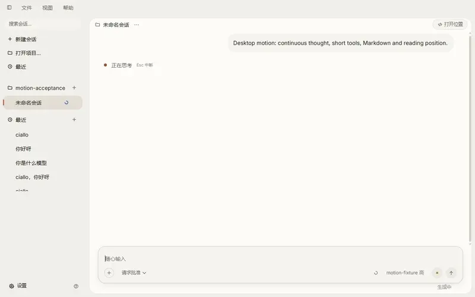

Desktop 动效验收
真实 Electron · Windows 原生 100% / 125% · 60Hz / 120Hz · 深浅主题。录像保持原速，预览采样上限 12.5fps，不补帧、不慢放。
验收报告 · 完整测量摘要 · 预览时间信息

完整流式过程，22.03 秒。60Hz、浅色、Windows 原生 100%。
原始记录包含每次收到的 rAF 几何采样和 DevTools 性能轨道。预览用于检查节奏；字体清晰度请看下面保留原分辨率的 PNG。此页不把预览采样率当作屏幕刷新率。